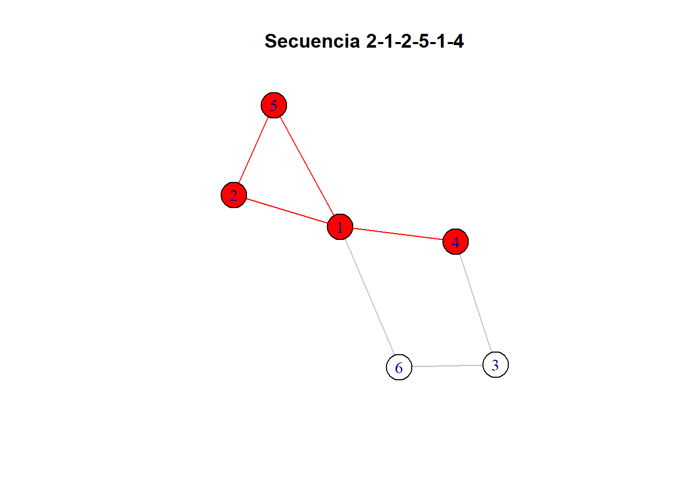
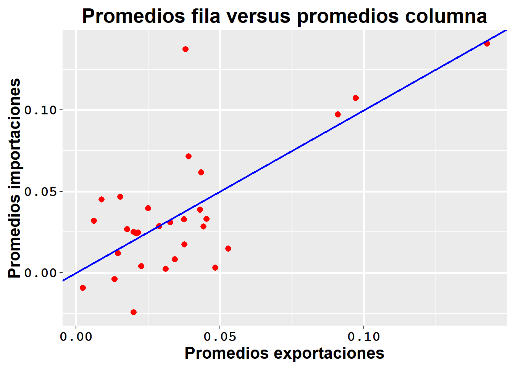
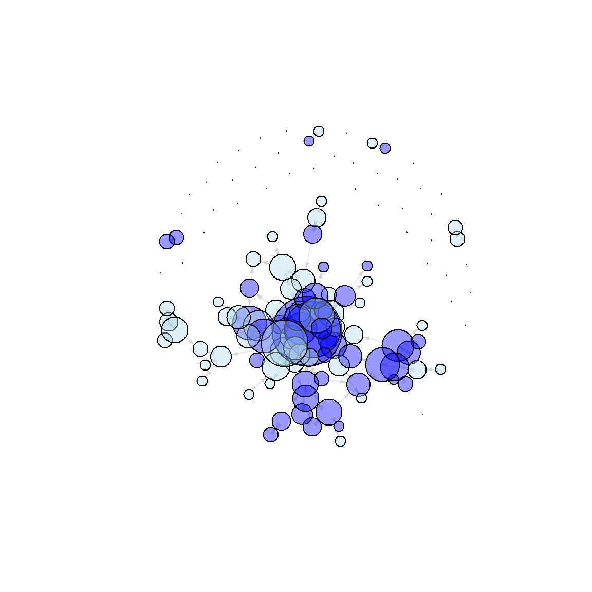
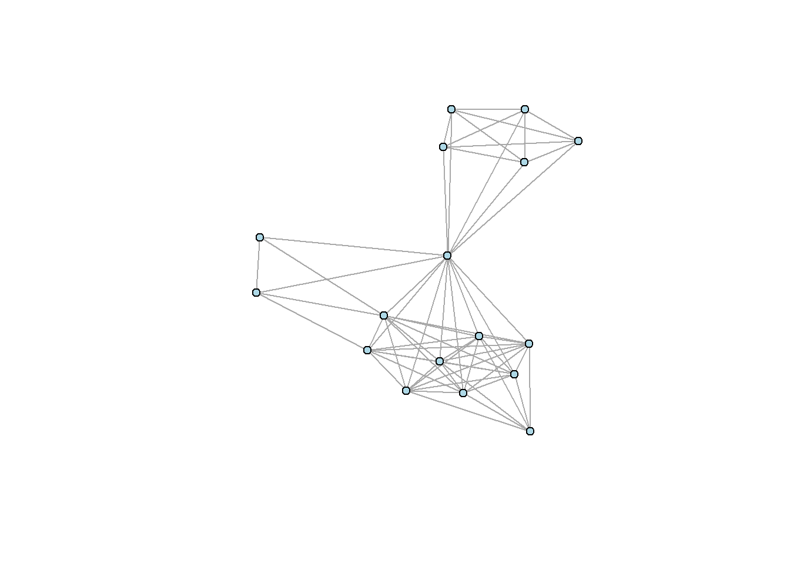

Taller 2
Punto 1
El grado de un nodo en una red tanto dirigida como no dirigida se puede calcular fácilmente a partir de la matriz de adyacencia \(\mathbf{Y}=[y_{i,j}]\). El out-degree \(d_i^{\text{out}}\) y el in-degree \(d_i^{\text{in}}\) del nodo \(i\) se pueden calcular respectivamente como: \[ d_i^{\text{out}} = \sum_{j:j\neq i} y_{i,j} \qquad\text{y}\qquad d_i^{\text{in}} = \sum_{j:j\neq i} y_{j,i} \] Muestre que si la red es no dirigida entonces \(d_i^{\text{out}} = d_i^{\text{in}}\).
Si la red no es dirigida, \(Y = [y_{ij}]\) es simétrica, así \(Y = [y_{ij}] = [y_{ji}] = Y^T\), entonces:
\[ d_i^{\text{out}} = \sum_{j:j \neq i} y_{i,j}= \sum_{j:j \neq i} y_{j,i} = d_i^{\text{in}} \]
Punto 2
Tanto para redes dirigidas como no dirigidas, se define la media global de las interacciones como \[ \bar{y}=\frac{1}{n(n-1)}\sum_{i,j:i\neq j} y_{i,j} \] donde \(\mathbf{Y}=[y_{i,j}]\) es la matriz de adyacencia de la red correspondiente. Tal estadístico corresponde a una descripción muy rudimentaria acerca de la plausibilidad de observar una relación entre dos nodos cualesquiera, dado que no tiene en cuenta la heterogeneidad nodal (algunos nodos son más propensos a enviar/recibir más relaciones).
a. Muestre que para relaciones no dirigidas la media global \(\bar{y}\) es igual a la media tanto de la parte triangular superior de \(\mathbf{Y}\) como de la parte triangular inferior de \(\mathbf{Y}\).
Como la red es no dirigida, \(Y = [y_{i,j}] = [y_{j,i}] = Y^T\), por lo tanto: \[\sum_{i,j: i > j} y_{i,j} = \sum_{i,j: i < j} y_{i,j}\] Así: \[ \bar{y}_{\text{sup}} = \frac{2}{n(n-1)} \sum_{i,j: i > j} y_{i,j} = \frac{2}{n(n-1)} \sum_{i,j: i < j} y_{i,j} = \bar{y}_{\text{inf}} \]
Por otro lado, \[\sum_{i,j: j \neq i} y_{ij}\] es una suma de 0’s y 1’s sobre toda la matriz \(Y\), entonces \[ \frac{1}{2} \sum_{i,j: i \neq j} y_{i,j} = \sum_{i,j: i < j} y_{i,j} = \sum_{i,j: i > j} y_{j,i} \] Luego,
\[ \bar{y}=\frac{1}{n(n-1)}\sum_{i,j:i\neq j} y_{i,j} = \frac{2}{n(n-1)} \sum_{i,j: i > j} y_{i,j} = \frac{2}{n(n-1)} \sum_{i,j: i <j} y_{i,j} \]
b. Muestre que tanto para relaciones dirigidas como no dirigidas la media global corresponde a la densidad de la red.
Redes no dirigidas
Para un subgrafo H, la densidad se define como \[ \text{den}(H) = \frac{|E_H|}{|V_H|(|V_H|-1)/2} \] En una red no dirigida, la cantidad de aristas se puede calcular como la suma de la matriz triangular superior o inferior de la matriz de adyacencia Y: \[ |E_H| = \sum_{i,j: i>j} y_{i,j} \] Por otro lado, \(|V_H|\) corresponde a la cantidad de vértices del grafo, que es igual al número de filas (n) o columnas (n) de la matriz de adyacencia.
\[ \text{den}(H) = \frac{2|E_H|}{|V_H|(|V_H|-1)} = \frac{2}{n(n-1)} \sum_{i,j:i<j} y_{i,j} \] Que, por el resultado anterior, es igual a: \[ \bar{y}=\frac{1}{n(n-1)}\sum_{i,j:i\neq j} y_{i,j} \] Redes dirigidas
En una red no dirigida, la cantidad de aristas se puede calcular como la suma de la matriz de adyacencia Y: \[ \sum_{i,j:i \neq j} y_{ij} \] y \(|V_H|=n\) como en el caso de una red no dirigida.
Así: \[ \text{den}(H) = \frac{|E_H|}{|V_H|(|V_H|-1)} = \frac{1}{n(n-1)} \sum_{i,j:i \neq j} y_{i,j} = \bar{y} \]
c. Muestre que tanto para relaciones dirigidas como no dirigidas se tiene que \((n-1)\bar{y} = \bar{d}^{\text{out}}=\bar{d}^{\text{in}}\). Es decir, el grado promedio tanto de entrada como de salida son iguales y a su vez equivalentes la densidad.
Redes no dirigidas \[ (n-1) \bar{y} = (n-1) \frac{1}{n(n-1)} \sum_{i,j: i \neq j} y_{i,j} = \frac{1}{n} \sum_{i,j: i \neq j} y_{i,j} \] \[ = \frac{1}{n} \sum_{i=1}^n \sum_{j=j \neq i} y_{i,j} = \frac{1}{n} \sum_{i=1}^n d_i^{\text{out}} = \bar{d}^{\text{out}} \] según el resultado del punto 1, en una red no dirigida \(d^{in} = d^{out}\), luego \[ \frac{1}{n} \sum_{i=1}^n d_i^{\text{out}} = \frac{1}{n} \sum_{i=1}^n d_i^{\text{in}} \] \[ \bar{d}^{\text{in}} = \bar{d}^{\text{out}} \] Redes dirigidas
\[ d_i^{\text{in}} = \sum_{j: j \neq i} y_{j,i} \]
\[ \bar{d}^{\text{in}} = \frac{1}{n} \sum_{i=1}^n \sum_{j=j \neq i} y_{j, i} = \frac{1}{n} \sum_{i=1}^n \sum_{j=j \neq i} y_{i, j} = \bar{d}^{\text{out}} \] \(\bar{d}^{\text{in}}\) se puede entender como una suma por columnas de la matriz de adyacencia sobre \(n\) y \(\bar{d}^{\text{out}}\) como una suma por filas de la matriz de adyacencia sobre \(n\).
Por otro lado, \[ (n-1) \bar{y} = (n-1) \frac{1}{n(n-1)} \sum_{i,j: i \neq j} y_{i,j} = \frac{1}{n} \sum_{i,j: i \neq j} y_{i,j} \] \[ = \frac{1}{n} \sum_{i=1}^n \sum_{j=j \neq i} y_{i,j} = \frac{1}{n} \sum_{i=1}^n d_i^{\text{out}} = \bar{d}^{\text{out}} = \bar{d}^{\text{in}} \]
Punto 3
Considere un grafo estrella de orden \(n\) y un grafo círculo de orden \(n\). A continuación se representan ambos grafos para \(n=9\). Estos grafos tienen aproximadamente la misma densidad, pero su estructura es muy diferente. Recuerde que la densidad de un grafo se puede calcular como el grado promedio dividido por \(n - 1\).
a. Muestre que para el grafo círculo de orden \(n\) el grado promedio es \(\bar{d} = 2\).
La matriz de adyacencia para un grafo círculo de orden n, sería: \[ Y_{n*n} = \begin{bmatrix} . & 1 & . & . & . & . & . & . & 1 \\ 1 & . & 1 & . & . & . & . & . & . \\ . & 1 & . & 1 & . & . & . & . & . \\ . & . & 1 & . & 1 & . & . & . & . \\ . & . & . & 1 & . & 1 & . & . & . \\ . & . & . & . & 1 & . & 1 & . & . \\ . & . & . & . & . & 1 & . & 1 & . \\ . & . & . & . & . & . & 1 & . & 1 \\ 1 & . & . & . & . & . & . & 1 & . \\ \end{bmatrix} \] En un grafo círculo, cada vértice tiene un grado de \(2\). Luego, la suma de todos los grados es: \[ \sum_{i,j=i \neq j} y_{i,j} = 2n \] El grado promedio es: \[ \bar{d} = (n-1) \bar{y} = (n-1) \frac{1}{n(n-1)} \sum_{i,j: i \neq j} y_{i,j} = \frac{1}{n} 2n = 2 \]
b. Muestre que para el grafo estrella de orden \(n\) el grado promedio es \(\bar{d} = 2\frac{n-1}{n} \rightarrow 2\) cuando \(n\rightarrow\infty\).
La matriz de adyacencia para un grafo estrella de orden n, sería: \[ Y_{n*n} = \begin{bmatrix} . & . & . & . & . & . & . & . & 1 \\ . & . & . & . & . & . & . & . & 1 \\ . & . & . & . & . & . & . & . & 1 \\ . & . & . & . & . & . & . & . & 1 \\ . & . & . & . & . & . & . & . & 1 \\ . & . & . & . & . & . & . & . & 1 \\ . & . & . & . & . & . & . & . & 1 \\ . & . & . & . & . & . & . & . & 1 \\ 1 & 1 & 1 & 1 & 1 & 1 & 1 & 1 & . \\ \end{bmatrix} \] En un grafo estrella, cada vértice tiene una relación con el vértice central \(n\), con excepción del vértice central que tiene \(n-1\) relaciones. Esto implica: \[ |E| = (n-1) + (n-1) = 2n-2 = 2(n-1) = \sum_{i,j: i \neq j} y_{i,j} \] Así, el grado promedio es: \[ \bar{d} = (n-1) \bar{y} = (n-1) \frac{1}{n(n-1)} \sum_{i,j: i \neq j} y_{i,j} = \frac{2(n-1)}{n} \] Cuando \({n \to \infty}\),
\[\bar{d} = 2\frac{n-1}{n} = 2 \frac{n}{n} \frac{1}{n} = 2 \frac{1}{n} \rightarrow 2\]
Punto 4
¿Cuáles de las siguientes secuencias son caminatas en el grafo que se presenta a continuación? ¿Cuáles senderos? ¿Cuáles circuitos? ¿Cuáles ciclos?

a. \(2 - 1 - 6 - 3 - 4\).
g4 <- graph_from_literal(1-2,1-5,6-1,4-1,2-5,3-4,3-6)
# Secuencia 2−1−6−3−4
V_cam1 <- c(2, 1, 6, 3, 4)
E_cam1 <- c("1-2", "1-6", "3-6", "3-4")
V(g4)$color <- ifelse(V(g4)$name %in% V_cam1, "red", "white")
E(g4)$color <- ifelse(apply(ends(g4, E(g4)), 1, function(x) paste(sort(x), collapse="-")) %in% E_cam1, "red", "gray")
set.seed(3312)
plot(g4, edge.arrow.size=1, vertex.size=20, vertex.label.cex=1, main="Secuencia 2−1−6−3−4")
Esta secuencia es un sendero, ya que es una caminata abierta que no tiene vertices ni aristas repetidas.
b. \(2 - 1 - 6 - 3 - 4 - 1 - 5\).
# Secuencia 2 - 1 - 6 - 3 - 4 - 1 - 5
V_cam2 <- c(2, 1, 6, 3, 4, 1, 5)
E_cam2 <- c("1-2", "1-6", "1-4", "1-5", "3-6", "3-4")
V(g4)$color <- ifelse(V(g4)$name %in% V_cam2, "red", "white")
E(g4)$color <- ifelse(apply(ends(g4, E(g4)), 1, function(x) paste(sort(x), collapse="-")) %in% E_cam2, "red", "gray")
set.seed(3312)
plot(g4, edge.arrow.size=1, vertex.size=20, vertex.label.cex=1, main="Secuencia 2-1-6-3-4-1-5")
Esta secuencia es un sendero, ya que es una caminata abierta que tiene vertices repetidos, pero no aristas repetidas.
c. \(2 - 1 - 2 - 5 - 1 - 4\).
# Secuencia 2 - 1 - 2 - 5 - 1 - 4
V_cam3 <- c(2, 1, 2, 5, 1, 4)
E_cam3 <- c("1-2", "2-1", "1-4", "1-5", "2-5")
V(g4)$color <- ifelse(V(g4)$name %in% V_cam3, "red", "white")
E(g4)$color <- ifelse(apply(ends(g4, E(g4)), 1, function(x) paste(sort(x), collapse="-")) %in% E_cam3, "red", "gray")
set.seed(3312)
plot(g4, edge.arrow.size=1, vertex.size=20, vertex.label.cex=1, main="Secuencia 2-1-2-5-1-4")
Esta secuencia es una caminata abierta que tiene vertices y aristas repetidas.
Punto 5
Considere el conjunto de datos dado en comtrade.RData (este archivo contiene una arreglo de cuatro dimensiones denominado comtrade), asociado con el crecimiento anual del comercio (diferencia en dólares en escala logarítmica respecto al año 2000). Este conjunto de datos involucra 30 países, 10 años desde 1996 hasta 2005, y 6 clases de productos diferentes, como se muestra a continuación:
load("comtrade.RData")
dimnames(comtrade)[c(1,3,4)][[1]]
[1] "Australia" "Austria" "Brazil"
[4] "Canada" "China" "China, Hong Kong SAR"
[7] "Czech Rep." "Denmark" "Finland"
[10] "France" "Germany" "Greece"
[13] "Indonesia" "Ireland" "Italy"
[16] "Japan" "Malaysia" "Mexico"
[19] "Netherlands" "New Zealand" "Norway"
[22] "Rep. of Korea" "Singapore" "Spain"
[25] "Sweden" "Switzerland" "Thailand"
[28] "Turkey" "United Kingdom" "USA"
[[2]]
[1] "Chemicals"
[2] "Crude materials, inedible, except fuels"
[3] "Food and live animals"
[4] "Machinery and transport equipment"
[5] "Manufact goods classified chiefly by material"
[6] "Miscellaneous manufactured articles"
[[3]]
[1] "1996" "1997" "1998" "1999" "2000" "2001" "2002" "2003" "2004" "2005"#View(comtrade[1,2,,]) # Paises, paises, productos y añoa. Calcule el aumento medio global \(\bar{y}\) a lo largo de los 10 años en bienes manufacturados. Para ello considere la matriz de adyacencia Y dada por:
Y <- apply(X = comtrade[,,c(5,6),], MARGIN = c(1,2), FUN = mean) #Media de años y bienes manufacturados
n <- dim(Y)[1]
Y[which(is.na(Y))] <- 0
#** mean(y) **#
round(sum(Y)/(n*(n-1)),4)[1] 0.0378b. Calcule la media de todas las observaciones de cada fila de Y, es decir, calcule la media fila \(\bar{y}_{i\bullet}=\frac{1}{n-1}\sum_{j:j\neq i} y_{i,j}\) para cada país. Realice una histograma de los promedios fila \(\bar{y}_{i\bullet}\). Los promedios fila caracterizan diferentes niveles de actividad de los nodos en términos de la sociabilidad. ¿Cómo se pueden interpretar los promedios fila \(\bar{y}_{i\bullet}\)?
mfila <- apply(Y, MARGIN = 1, FUN = mean)
mfila <- data.frame(Fila = mfila, row.names = NULL)
#hist(apply(Y, MARGIN = 1, FUN = mean))
ggplot(mfila, aes(x = Fila)) +
geom_histogram(alpha = 0.8, bins = 7, position = "identity", fill="purple", colour = "black",lwd = 0.1,linetype = 1) +
labs(title=expression(paste("Media de observaciones por fila (", bar(y)[i.], ")")), x="Media de crecimiento anual en bienes manufacturados", y="Frecuencia") + mitema +
theme(strip.background=element_rect(color="black",fill="gray80",size=1), strip.text=element_text(face="bold",size=15,vjust=0.5,hjust=0.5,color="black",angle=0))Los promedios fila indican cuánto aumenta o disminuye, en promedio, el comercio saliente (exportaciones) de bienes manufacturados del país \(i\) hacia los demás países en comparación con el año 2000. De acuerdo al histograma, la mayoría de los paises, en promedio, aumentaron su comercio saliente a menos de 0.05 con respecto al 2000. Por otro lado, un país tuvo un comercio saliente promedio superior al de los demás países, lo que lo posiciona como el mayor exportador en los años de evaluación.
c. Calcule la media de todas las observaciones de cada columna de Y, es decir, calcule la media columna \(\bar{y}_{\bullet j}=\frac{1}{n-1}\sum_{i:i\neq j} y_{i,j}\) para cada país. Realice una histograma de los promedios columna \(\bar{y}_{\bullet j}\). Los promedios columna caracterizan diferentes niveles de actividad de los nodos en términos de la popularidad. ¿Cómo se pueden interpretar los promedios columna \(\bar{y}_{\bullet j}\)?
mcol <- apply(Y, MARGIN = 2, FUN = mean)
mcol <- data.frame(Col = mcol, row.names = NULL)
#hist(apply(Y, MARGIN = 2, FUN = mean))
ggplot(mcol, aes(x = Col)) +
geom_histogram(alpha = 0.8, position = "identity", bins = 7, fill="purple", colour = "black",lwd = 0.1,linetype = 1) +
labs(title=expression(paste("Media de observaciones por columna (", bar(y)[.j], ")")), x="Media de crecimiento anual en bienes manufacturados", y="Frecuencia") + mitema +
theme(strip.background=element_rect(color="black",fill="gray80",size=1), strip.text=element_text(face="bold",size=15,vjust=0.5,hjust=0.5,color="black",angle=0))Los promedios columna indican cuánto aumenta o disminuye, en promedio, el comercio entrante (importaciones) de bienes manufacturados hacia un país \(i\) desde los demás países en comparación con el año 2000. De acuerdo al histograma, algunos países, en promedio, disminuyeron su comercio entrante con respecto al 2000. Mientras que algunos pocos aumentaron sus importaciones a mas del 0.10 con el respecto al año 2000, lo que los posiciona como los mayores importadores en los años de evaluación.
d. Calcule tanto la media de los promedios fila \(\bar{y}_{i\bullet}\) como la media de los promedios columna \(\bar{y}_{\bullet j}\). Qué se puede concluir acerca de la tendencia local en este caso?
meand <- cbind(round(mean(mfila[,1]), 4), round(mean(mcol[,1]), 4))
colnames(meand) <- c("Media promedios fila", "Media promedios columna")
rownames(meand) <- NULL
kable(meand, align = "c")| Media promedios fila | Media promedios columna |
|---|---|
| 0.0365 | 0.0365 |
La media de los promedios fila y de los promedios columna es igual por como están definidas las medidas. Su valor es de 0.0365, el cual es cercano a 0, lo que indica que hubo un leve nivel de crecimiento económico tanto saliente como entrante de bienes manufacturados en comparación con el año 2000, en la red.
e. Calcule tanto la DE de los promedios fila \(\bar{y}_{i\bullet}\) como la DE de los promedios columna \(\bar{y}_{\bullet j}\). ¿Qué se puede concluir acerca de la heterogeneidad local en este caso?
sde <- cbind(round(sd(mfila[,1]), 4), round(sd(mcol[,1]), 4))
colnames(sde) <- c("DE promedios fila", "DE promedios columna")
rownames(sde) <- NULL
kable(sde, align = "c")| DE promedios fila | DE promedios columna |
|---|---|
| 0.0292 | 0.0396 |
La desviación estándar de los promedios fila es inferior a la desviación estándar de los promedios columna, lo que indica que hay mayor heterogeneidad entre los niveles de importación de cada país que entre los de exportación. Así, en cuanto al nivel de exportación, el comercio saliente de los países dista, en promedio, 0.0292 de la media, mientras que el comercio entrante de los países dista, en promedio, 0.0396 de la media.
f. Calcule el coeficiente de correlación entre los promedios fila \(\bar{y}_{i\bullet}\) y los promedios columna \(\bar{y}_{\bullet j}\). Realice un dispersograma de los promedios columna \(\bar{y}_{\bullet j}\) (eje \(y\)) frente a los promedios fila \(\bar{y}_{i\bullet}\) (eje \(x\)), junto con la recta \(y=x\) como punto de referencia. ¿Qué se puede concluir?
tabf <- cbind(mfila, mcol)
# Coeficiente de correlacion
cat("Coeficiente de correlación:", round(cor(tabf)[1,2], 2))Coeficiente de correlación: 0.7# Grafico
ggplot(tabf,aes(x=Fila,y=Col)) +
geom_point(color="red",shape=16,size=2.5)+
geom_smooth(method="lm",formula=y ~ poly(x,degree=1),se=FALSE,size=1,
linetype="solid",color="blue")+
labs(title="Promedios fila versus promedios columna",x="Promedios exportaciones",y="Promedios importaciones") +
mitema
El coeficiente de correlación lineal entre los promedios fila y los promedios columna es de 0.7, lo que indica que hay una relación lineal alta. Así, si el promedio de exportaciones de un país \(i\) es alto, su promedio de importaciones también lo será. Por otro lado, según el dispersograma, el promedio de las exportaciones y de las importaciones en los países tiende a mantener una magnitud y signo similar que puede ser representada por la recta \(x=y\), por supuesto, con la presencia de ciertos países que parecen no seguir dicha relación.
Punto 6
Considere el conjunto de datos dado en conflict.RData recopilado por Mike Ward y Xun Cao del departamento de Ciencias Políticas de la Universidad de Washington, asociado con datos de conflictos entre países en los años 90. El archivo conflict.RData contiene una lista con tres arreglos, X, Y, y D. X tiene tres campos: population (población en millones), gdp (PIB en millones de dolares) polity (puntuación política, un índice de democracia). Y hace referencia a una matriz \(\mathbf{Y}=[y_{i,j}]\) en la que \(y_{i,j}\) representa el número de conflictos iniciados por el país \(i\) hacia el país \(j\). Finalmente, Des un arreglo de tres dimensiones dimensiones cuya tercera dimensión contiene indices entre cada par de países asociados con: comercio (dimensión 1), importaciones (dimensión 2), organizaciones intergubernamentales (dimensión 3), y distancia geográfica (dimensión 4).
a. Hacer una visualización decorada de la red de conflictos teniendo en cuenta diferentes diseños.
load("conflict.RData")
g6 <- graph_from_adjacency_matrix(dat$Y, mode = "directed", weighted = TRUE, diag = FALSE)
# Asignar nombres a los vértices del g6
V(g6)$name <- rownames(dat$X)
# Visualizar el g6 sin decorar
set.seed(1234)
plot(g6, vertex.label=NA,
vertex.size=10, vertex.color="lightblue", edge.arrow.size=0.5)
## Layout
set.seed(1208)
b<-layout_as_star(g6)
c<-layout_as_tree(g6)
d<-layout_in_circle(g6)
e<-layout_nicely(g6)
f<-layout_on_grid(g6)
g<-layout_on_sphere(g6)
i<-layout_with_dh(g6)
j<-layout_with_fr(g6)
k<-layout_with_gem(g6)
l<-layout_with_graphopt(g6)
m<-layout_with_kk(g6)
n<-layout_with_lgl(g6)
o<-layout_with_mds(g6)
p<-layout_with_sugiyama(g6)
####################################################################################################
## Aca dice que hay que probar varios diseños, asi que ustedes escogen los que quieran
####################################################################################################
par(mfrow=c(1,2))
# Usando el grado
plot(g6, layout = j, vertex.size = 3 * sqrt(igraph::degree(g6)), vertex.label = NA,
vertex.color = adjustcolor("royalblue", 0.2), vertex.frame.color = "royalblue",
edge.color = adjustcolor("gray", 0.4), edge.arrow.size = 0.5)
title(sub = "Grado", line = -1)
# Usando la fuerza
plot(g6, layout = j, vertex.size = 3* sqrt(strength(g6, weights = NA)), vertex.label = NA,
vertex.color = adjustcolor("royalblue", 0.2), vertex.frame.color = "royalblue",
edge.color = adjustcolor("gray", 0.4), edge.arrow.size = 0.5)
title(sub = "Fuerza", line = -1)
title(main = "Red de Conflictos", outer = TRUE, line = -2)b. Calcule e interprete la media global.
c. Obtenga y grafique la distribución del out-degree y del in-degree. Calcule e interprete la media y la desviación estándar de esta distribución.
d. Calcule el coeficiente de correlación entre los valores del out-degree y el in-degree. Realice un dispersograma de los grados de entrada (eje \(y\)) frente a los grados de salida (eje\(x\)), junto con la recta \(y=x\) como punto de referencia. ¿Qué se puede concluir?
e. Identifique los países mas activos.
Punto 7
Para todos los vértices de los cuatro grafos que se presentan a continuación, calcular el grado y las medidas de centralidad. Para cada grafo completar e interpretar la siguiente tabla. Interpretar los resultados.
Punto 8
Considere los datos relacionales acerca de los conflictos internacionales del archivo conflict.RData despúes de simetrizarla débilmente y remover los nodos aislados:
# datos
# load("conflict.RData")
# Y <- dat$Y
# # remover nodos aislados
# Y <- 1*( Y*t(Y) > 0 )
# deg <- apply(X = Y, MARGIN = 1, FUN = sum, na.rm = TRUE)
# Y <- Y[deg > 0, deg > 0]a. Hacer una visualización de la red.
b. Caracterizar local y estructuralmente la red, en términos de la distancia, la centralidad, la cohesión, la conectivaidad, y el agrupamento. Utilizar todas las métricas disponbles.
c. Interpretar los resultados
Punto 9
Sintetizar y replicar los Capítulos 6, 8, y 9 de Luke, D. A. (2015).
Capítulo 6 - Graficos avanzados de redes
Aunque los paquetes statnet e igraph ofrecen funcionalidades avanzadas para la representación de redes, no siempre cumplen con todos los requerimientos analíticos o de presentación. En muchos casos, los investigadores en el campo de las redes necesitan visualizaciones más especializadas y dinámicas.
Gráficos Interactivos de Redes
Diversos paquetes para el análisis de redes, como UCINet y Pajek, facilitan la creación de gráficos interactivos. Aunque R proporciona un control preciso sobre las visualizaciones, no siempre incluye funcionalidades interactivas de forma nativa. Por lo que se presentan alternativas para generar gráficos interactivos en R y publicarlos en la web.
Redes interactivas simples con tkplot() en igraph
El paquete igraph incluye la función tkplot() para gráficos interactivos simples. Se usa para ajustar las posiciones de los nodos y luego producir un gráfico final no interactivo.
data(Bali)
iBali <- asIgraph(Bali)
Coord <- tkplot(iBali, vertex.size=3,
vertex.label=V(iBali)$role,
vertex.color="darkgreen")
# Editar el gráfico en la ventana gráfica Tk antes
# de ejecutar los siguientes dos comandos.
MCoords <- tk_coords(Coord)
set.seed(1234)
plot(iBali, layout=MCoords, vertex.size=5,
vertex.label=NA, vertex.color="lightblue")Publicación de diagramas interactivos de redes basados en Web
Se están implementando métodos para desarrollar gráficos interactivos basados en la web utilizando frameworks como D3.js y Shiny. El paquete networkD3 permite crear visualizaciones interactivas simples que pueden integrarse en documentos de Shiny o páginas HTML. Por otro lado, el paquete visNetwork, basado en la biblioteca vis.js, proporciona mayores posibilidades de personalización en la apariencia y facilita la incorporación de gráficos en aplicaciones web desarrolladas con Shiny.
La función simpleNetwork() espera los datos de la red en forma de una lista de aristas almacenada en un data.frame.
#library(networkD3)
src <- c("A", "A", "B", "B", "C", "B")
target <- c("B", "C", "C", "D", "B", "C")
net_edge <- data.frame(src, target)
simpleNetwork(net_edge)Para guardar la visualización:
net_D3 <- simpleNetwork(net_edge)
# saveNetwork(net_D3, file = 'Net_test1.html', selfcontained=TRUE)La función forceNetwork() produce graficos más sofisticados.
Se le deben pasar los datos en dos data.frames:
El data.frame de las aristas tendrá los datos de red en formato de matriz de aristas.
El data.frame de los nodos tendrá el ID de nodo y las propiedades de los nodos. Si los nodos tienen identificadores numéricos, deben comenzar en 0.
iBali_edge <- as_edgelist(iBali)
iBali_edge <- iBali_edge - 1
iBali_edge <- data.frame(iBali_edge)
iBali_nodes <- data.frame(NodeID=as.numeric(V(iBali)-1),
Group=V(iBali)$role,
Nodesize=igraph::degree(iBali))
forceNetwork(Links = iBali_edge, Nodes = iBali_nodes,
Source = "X1", Target = "X2",
NodeID = "NodeID", Nodesize = "Nodesize",
radiusCalculation="Math.sqrt(d.nodesize)*3",
Group = "Group", opacity = 0.8,
legend=TRUE)Para guardar el gráfico:
net_D3 <- forceNetwork(Links = iBali_edge,
Nodes = iBali_nodes,
Source = "X1", Target = "X2",
NodeID = "NodeID",Nodesize = "Nodesize",
radiusCalculation="Math.sqrt(d.Nodesize)*3",
Group = "Group", opacity = 0.8,
legend=TRUE)
# saveNetwork(net_D3, file = 'Net_test2.html', selfcontained=TRUE)Usando la función vis.js de la libreria javascript.
Se le deben pasar los datos en dos data.frames:
El data.frame de las aristas tendrá los datos de red en columnas from y to.
El data.frame de los nodos tendrá el ID de nodo y las propiedades de los nodos.
#library(visNetwork)
iBali_edge <- as_edgelist(iBali)
iBali_edge <- data.frame(from = iBali_edge[,1],
to = iBali_edge[,2])
iBali_nodes <- data.frame(id = as.numeric(V(iBali)))
set.seed(123)
visNetwork(iBali_nodes, iBali_edge, width = "100%")Algunas opciones de la libreria son:
iBali_nodes$group <- V(iBali)$role
iBali_nodes$value <- igraph::degree(iBali)
net <- visNetwork( iBali_nodes, iBali_edge,
width = "100%", legend.width=TRUE)
visOptions(net, highlightNearest = TRUE)Las funciones visNetwork() y visOptions() establecen colores predeterminados para cada grupo y permiten que el usuario resalte los nodos individuales y sus vecinos inmediatos al hacer clic en un nodo.
En el ejemplo se agregan botones de navegación que permiten mover la red y acercar o alejar.
net <- visNetwork(iBali_nodes, iBali_edge,
width = "100%", legend=TRUE)
net <- visOptions(net, highlightNearest = TRUE)
net <- visInteraction(net, navigationButtons = TRUE)
#library(htmlwidgets)
#saveWidget(net, "Net_test3.html")Statnet Web: Statnet Interactivo con Shiny
Statnet Web es una aplicación web, basada en las herramientas de análisis de redes de Statnet utilizando Shiny.
#library(statnetWeb)
#run_sw()Diagramas de redes especializados
Existen técnicas especializadas para resaltar aspectos importantes de las redes, como diagramas de arco, diagramas de acordes y mapas de calor.
Diagramas de Arco
Los diagramas de arco se enfocan en el patrón de los enlaces más que en la posición de los nodos. Uso del paquete arcdiagram
#library(devtools)
#remotes::install_github("gastonstat/arcdiagram")
#library(arcdiagram)
#library(UserNetR)
data(Simpsons)
iSimp <- asIgraph(Simpsons)
simp_edge <- get.edgelist(iSimp)
arcplot(simp_edge)
Ajustando colores por subgrupos y tamaño de los nodos de acuerdo al grado.
s_grp <- V(iSimp)$group
s_col = c("#a6611a", "#dfc27d", "#80cdc1", "#018571")
cols = s_col[s_grp]
node_deg <- igraph::degree(iSimp)
arcplot(simp_edge, lwd.arcs=2, cex.nodes=node_deg/2,
labels=V(iSimp)$vertex.names,
col.labels="darkgreen", font=1,
pch.nodes=21, line=1, col.nodes = cols,
bg.nodes = cols, show.nodes = TRUE)Diagramas de Acordes
Los diagramas de acordes usan un diseño circular para mostrar interrelaciones en una matriz. Son importantes para evaluar redes ponderadas y dirigidas.
Los datos se deben tener en una sociomatriz, con las entradas correspondientes al tamaño del enlace y debe tener nombres asignados a filas y a columnas. El paquete circlize() implementa estos gráficos, permitiendo un gran control sobre la apariencia. Son útiles para redes valoradas y dirigidas.
# library(statnet)
# library(circlize)
data(FIFA_Nether)
FIFAm <- as.sociomatrix(FIFA_Nether, attrname='passes')
names <- c("GK1", "DF3", "DF4", "DF5", "MF6",
"FW7", "FW9", "MF10", "FW11", "DF2", "MF8")
rownames(FIFAm) = names
colnames(FIFAm) = names
FIFAm GK1 DF3 DF4 DF5 MF6 FW7 FW9 MF10 FW11 DF2 MF8
GK1 0 42 67 21 2 27 7 5 2 17 3
DF3 30 0 44 14 42 15 8 7 10 36 29
DF4 38 43 0 57 18 11 7 21 1 7 28
DF5 6 14 47 0 11 50 20 40 1 4 42
MF6 9 28 25 10 0 41 28 37 14 34 21
FW7 4 12 1 21 21 0 15 33 9 25 18
FW9 0 0 1 8 7 12 0 31 16 7 2
MF10 1 11 11 22 43 29 20 0 28 13 21
FW11 3 2 2 3 7 6 11 15 0 21 12
DF2 29 38 8 3 45 38 10 18 26 0 15
MF8 12 25 26 38 23 13 12 32 11 24 0Eliminar los pases menores a 10 para hacer más facil de interpretar el gráfico.
FIFAm[FIFAm < 10 ] <- 0
FIFAm GK1 DF3 DF4 DF5 MF6 FW7 FW9 MF10 FW11 DF2 MF8
GK1 0 42 67 21 0 27 0 0 0 17 0
DF3 30 0 44 14 42 15 0 0 10 36 29
DF4 38 43 0 57 18 11 0 21 0 0 28
DF5 0 14 47 0 11 50 20 40 0 0 42
MF6 0 28 25 10 0 41 28 37 14 34 21
FW7 0 12 0 21 21 0 15 33 0 25 18
FW9 0 0 0 0 0 12 0 31 16 0 0
MF10 0 11 11 22 43 29 20 0 28 13 21
FW11 0 0 0 0 0 0 11 15 0 21 12
DF2 29 38 0 0 45 38 10 18 26 0 15
MF8 12 25 26 38 23 13 12 32 11 24 0set.seed(123)
chordDiagram(FIFAm)Ajuste de parámetros:
Jugadores en la misma posición van a tener el mismo color.
Como la red es dirigida, los pases de salida comienzan más lejos del círculo exterior, lo que facilita ver la diferencia entre los pases enviados y los pases recibidos.
Ordenar a los jugadores por su posición.
set.seed(123)
grid.col <- c("#AA3939",rep("#AA6C39",4), rep("#2D882D",3),rep("#226666",3))
chordDiagram(FIFAm,directional = TRUE, grid.col = grid.col, order=c("GK1","DF2","DF3","DF4","DF5", "MF6","MF8","MF10","FW7", "FW9","FW11"))
Mapas de calor
Los mapas de calor resaltan nodos con mayor cantidad de conexiones en redes ponderadas. Se debe crear una sociomatriz que refleje el peso y se debem definir los nombres de filas y columnas.
data(FIFA_Nether)
FIFAm <- as.sociomatrix(FIFA_Nether, attrname='passes')
colnames(FIFAm) <- c("GK1", "DF3", "DF4", "DF5", "MF6", "FW7", "FW9", "MF10", "FW11", "DF2", "MF8")
rownames(FIFAm) <- c("GK1", "DF3", "DF4", "DF5", "MF6", "FW7", "FW9", "MF10", "FW11", "DF2", "MF8")pal <- colorRampPalette(c("#669999", "#003333"))
heatmap(FIFAm[,11:1], Rowv = NA, Colv = NA, col = pal(60), scale = "none")Creación de diagramas con otros paquetes de R
Ggplot2
Aunque ggplot2 no es un paquete completo de visualización de redes, sus capacidades gráficas avanzadas permiten crear gráficos especializados de redes dirigidas, haciendo relaciones curvos entre cada díada conectada.
edgeMaker <- function(whichRow, len=100, curved = TRUE){
fromC <- layoutCoordinates[adjacencyList[whichRow, 1],]
toC <- layoutCoordinates[adjacencyList[whichRow, 2], ]
graphCenter <- colMeans(layoutCoordinates)
bezierMid <- c(fromC[1], toC[2])
distance1 <- sum((graphCenter - bezierMid)^2)
if(distance1 < sum((graphCenter - c(toC[1], fromC[2]))^2)){
bezierMid <- c(toC[1], fromC[2])
}
bezierMid <- (fromC + toC + bezierMid) / 3
if(curved == FALSE){bezierMid <- (fromC + toC) / 2}
edge <- data.frame(Hmisc::bezier(c(fromC[1], bezierMid[1], toC[1]),
c(fromC[2], bezierMid[2], toC[2]),
evaluation = len))
edge$Sequence <- 1:len
edge$Group <- paste(adjacencyList[whichRow, 1:2], collapse = "-")
return(edge)
}Función bezier() del paquete Hmisc
# library(sna)
# library(ggplot2)
# library(Hmisc)Se deben transformar los datos a un formato de matriz de aristas y se eliminan pases menores a 10.
data(FIFA_Nether)
fifa <- FIFA_Nether
fifa.edge <- as.edgelist.sna(fifa, attrname='passes')
fifa.edge <- data.frame(fifa.edge)
names(fifa.edge)[3] <- 'Value'
fifa.edge <- fifa.edge[fifa.edge$Value > 9, ]
adjacencyList <- fifa.edgeSe usa la función gplot para almacenar las coordenadas de diseño para la función ggplot2.
layoutCoordinates <- gplot(network(fifa.edge))allEdges <- lapply(1:nrow(fifa.edge), edgeMaker, len = 500, curved = TRUE)
allEdges <- do.call(rbind, allEdges)new_theme_empty <- theme_bw()
new_theme_empty$line <- element_blank()
new_theme_empty$rect <- element_blank()
new_theme_empty$strip.text <- element_blank()
new_theme_empty$axis.text <- element_blank()
new_theme_empty$plot.title <- element_blank()
new_theme_empty$axis.title <- element_blank()
new_theme_empty$plot.margin <- structure(c(0, 0, -1, -1),
unit = "lines", valid.unit = 3L, class = "unit")Función ggplot.
La opción scale_colour_gradient controla la intensidad del degradado y la opción scale_size controla la cantidad de conicidad.
set.seed(123)
zpl <- ggplot(allEdges)
zpl <- zpl + geom_path(aes(x = x, y = y, group = Group, colour = Sequence, size = -Sequence))
zpl <- zpl + geom_point(data = data.frame(layoutCoordinates), aes(x = x, y = y), size = 4, pch = 21, colour = "black", fill = "gray")
zpl <- zpl + scale_colour_gradient(low = gray(0), high = gray(9/10), guide = "none")
zpl <- zpl + scale_size(range = c(1/10, 1.5), guide = "none")
zpl <- zpl + new_theme_empty
print(zpl)Capítulo 8 - Subgrupos
Muchas redes sociales del mundo real pueden dividirse en subgrupos de redes densamente conectadas a través de una menor cantidad de aristas, lo que va a ser de gran importancia identificar si se quiere de descubrir el comportamiento de toda la red.
Cohesión social: La cohesión social permite identificar subgrupos de individuos con enlaces fuertes y directos.
Cliques: Un clique es un subgrafo maximamente completo, es decir un subgrafo donde cada vértice puede acceder a los demás a través de una relación directa.
Ejemplo 1.
clqexmp <- graph_from_literal(A:B:C:D--A:B:C:D,D-E,E-F-G-E)
set.seed(123)
plot(clqexmp, vertex.color = "lightblue")Este grafo tiene dos cliques, A, B, C, D y E, F, G. Los cliques relevantes van a ser los de orden igual o superior a 3. Por definición, un clique de orden \(k\) también contiene cliques de orden \(k-1\), \(k-2\), etc.
La función clique_num() muestra el orden del clique más grande.
clique_num(clqexmp)[1] 4La función cliques() retorna una lista de los cliques de un orden mínimo y máximo asignado.
cliques(clqexmp,min=3)[[1]]
+ 3/7 vertices, named, from fdf0210:
[1] B C D
[[2]]
+ 3/7 vertices, named, from fdf0210:
[1] E F G
[[3]]
+ 3/7 vertices, named, from fdf0210:
[1] A B C
[[4]]
+ 4/7 vertices, named, from fdf0210:
[1] A B C D
[[5]]
+ 3/7 vertices, named, from fdf0210:
[1] A B D
[[6]]
+ 3/7 vertices, named, from fdf0210:
[1] A C DLa función max_cliques() es útil cuando hay muchos cliques, pues omite los cliques que hacen parte de cliques de orden mayor.
max_cliques(clqexmp,min=3)[[1]]
+ 3/7 vertices, named, from fdf0210:
[1] E F G
[[2]]
+ 4/7 vertices, named, from fdf0210:
[1] A B D CLa función largest_cliques() identifica el clique de orden mayor.
largest_cliques(clqexmp)[[1]]
+ 4/7 vertices, named, from fdf0210:
[1] A B D CLa siguiente linea de código muestra como se puede obtener el nombre de los vértices, en lugar de sus id’s (como lo hacen las funciones anteriores).
V(clqexmp)[unlist(largest_cliques(clqexmp))]+ 4/7 vertices, named, from fdf0210:
[1] A B D CDesventajas de los cliques:
Es una definición conservadora de un subgrupo cohesivo, pues requiere que cada vertice este relacionado con todos los demás, lo que podría descartar subgrupos realmente cohesivos por falta de unos pocos enlaces.
Dada su anterior limitación, en redes grandes del mundo real, los cliques no son comunes.
La siguiente simulación muestra lo poco comunes que son los cliques. Se simularon 4 redes con 25, 50, 100 y 500 nodos. Para cada red, el promedio del grado es como máximo 6. La tabla muestra que el número de cliques se mantiene constante a pesar de que el orden de la red aumenta. Además, los cliques son de tamaño pequeño en todos los casos.
set.seed(9679)
g25 <- erdos.renyi.game(25, 75, type="gnm")
g50 <- erdos.renyi.game(50, 150, type="gnm")
g100 <- erdos.renyi.game(100, 300, type="gnm")
g500 <- erdos.renyi.game(500, 1500, type="gnm")
nodes <- c(25,50,100,500)
lrgclq <- c(clique_num(g25),clique_num(g50), clique_num(g100),clique_num(g500))
numclq <- c(length(cliques(g25,min=3)),length(cliques(g50,min=3)),
length(cliques (g100,min=3)),length(cliques(g500,min=3)))
clqinfo <- data.frame (Nodes=nodes,Largest=lrgclq,
Number=numclq)
clqinfo Nodes Largest Number
1 25 4 34
2 50 3 36
3 100 3 36
4 500 3 38#kable(clqinfo, align = "c")k-cores
Es una variación de la idea de los cliques. Un k-core es un subgrafo maximal donde cada vertice está conectado con al menos k vertices. Una de las ventajas del k-core es que es anidado, es decir cada miembro de un 4-core es miembro de un 3-core y así sucesivamente.
Ejemplo DHHS
# library(statnet)
# install.packages("remotes")
# remotes::install_github("DougLuke/UserNetR")
# library(UserNetR)
# data(DHHS)
# library(intergraph)
iDHHS <- asIgraph(DHHS)
edge_density(iDHHS)[1] 0.312369La función subgraph.edges() selecciona solo las aristas con atributos 3 o 4.
iDHHS<-subgraph_from_edges(iDHHS,E(iDHHS)[collab>2])
edge_density(iDHHS)[1] 0.1533688La función graph.coreness() identifica la estructura k-core
coreness<-coreness(iDHHS)
table(coreness)coreness
1 2 3 4 5 6
7 6 2 5 2 26 maxCoreness<-max(coreness)
maxCoreness[1] 6Grafica de la red teniendo en cuenta la estrcutura k-core
# Vname <- get.vertex.attribute(iDHHS, name= 'vertex.names',index=V(iDHHS))
# V(iDHHS)$name<-Vname
V(iDHHS)$color<-coreness+1
op <-par(mar=rep(0,4))
set.seed(123)
plot(iDHHS,vertex.label.cex=0.8)par(op)Agregar labels que indiquen el valor k-core
colors <-rainbow(maxCoreness)
op <-par(mar=rep(0,4))
plot(iDHHS,vertex.label=coreness,vertex.color=colors[coreness])par(op)El centro de la red está compuesta principalmente por los k-core más altos.
Para examinar los patrones de cada subgrupo, se van a ir despegando los k-cores del más bajo al más alto con la función induced.subgraph()
V(iDHHS)$name <- coreness
V(iDHHS)$color <- colors[coreness]
iDHHS1_6 <- iDHHS
iDHHS2_6 <- induced_subgraph(iDHHS, vids= which(coreness > 1))
iDHHS3_6 <- induced_subgraph(iDHHS,vids = which(coreness > 2))
iDHHS4_6 <- induced_subgraph(iDHHS,vids = which(coreness > 3))
iDHHS5_6 <- induced_subgraph(iDHHS,vids = which(coreness > 4))
iDHHS6_6 <- induced_subgraph(iDHHS,vids = which(coreness > 5))
lay <- layout.fruchterman.reingold(iDHHS)
op <- par (mfrow=c(3,2),mar = c(3,0,2,0))
set.seed(123)
plot (iDHHS1_6,layout=lay,main="All k-cores")
plot (iDHHS2_6,layout=lay[which(coreness > 1),],main="k-cores 2-6")
plot (iDHHS3_6,layout=lay[which (coreness > 2),],main="k-cores 3-6")
plot (iDHHS4_6,layout=lay [which (coreness > 3),],main="k-cores 4-6")
plot (iDHHS5_6,layout=lay[which (coreness > 4),],main="k-cores 5-6")
plot (iDHHS6_6,layout=lay[which(coreness > 5),],main="k-cores 6-6")par(op)Detección comunitaria
Tanto k-cores como cliques son ejemplos que para identificar subgrupos dependen del patron de relaciones internas definidas en estos. Sin embargo, existen algoritmos de identificación de subgrupos que detectan grupos de tal manera que hayan muchas relaciones internas y algunas entre otros grupos.
Modularidad
Es una medida del grado en que los nodos presentan agrupamiento, donde hay mayor densidad dentro de los grupos y menos densidad entre ellos.
Puede ser usada para que un algoritmo intente maximizarla y devuelva la mejor clasificación que explique a la red.
Puede ser usada como estadística para cualquier variable de clasificación de nodos.
La modularidad puede variar desde \(\frac{-1}{2}\) a \(1\). Entre más cerca de 1, más agrupación exhibe la red con respecto a la variable de agrupamiento dada.
Ejemplo: Red de 9 nodos con dos atributos que clasifican los nodos en tres grupos.
g1 <- graph_from_literal(A-B-C-A,D-E-F-D,G-H-I-G,A-D-G-A)
V(g1)$grp_good <- c(1,1,1,2,2,2,3,3,3)
V(g1)$grp_bad <- c(1,2,3,2,3,1,3,1,2)
set.seed(123)
op <- par(mfrow=c(1,2))
plot(g1,vertex.color =(V(g1)$grp_good),vertex.size=20, main="Good Grouping")
plot(g1,vertex.color=(V(g1)$grp_bad),vertex.size=20,main="Bad Grouping")par(op)La agrupación que mejor explica a la red es la de la izquierda, lo que se puede comprobar calculando la modularidad.
modularity(g1,V(g1)$grp_good)[1] 0.4166667modularity(g1,V(g1)$grp_bad)[1] -0.3333333Ejemplo DHHS
library(intergraph)
data(DHHS)
iDHHS <- asIgraph(DHHS)
table(V(iDHHS)$agency)
0 1 2 3 4 5 6 7 8 9 10
2 4 12 2 2 3 2 16 3 5 3 V(iDHHS)[1:10]+ 10/54 vertices, from fe6f023:
[1] 1 2 3 4 5 6 7 8 9 10modularity(iDHHS,(V(iDHHS)$agency+1))[1] 0.1402264Como la modularidad es de 0.14, entonces la variable agency explica algo del agrupamiento presente en la red.
La modularidad adquiere un significado más útil si se utiliza para compararse con otra medida relevante. Por ejemplo, comparar la estadística usando dos variables nodales distintas.
Ejemplo Moreno
data(Moreno)
iMoreno <- asIgraph(Moreno)
table(V(iMoreno)$gender)
1 2
16 17 modularity(iMoreno,V(iMoreno)$gender)[1] 0.4761342data(Facebook)
Facebook <- upgrade_graph(Facebook)
levels(factor(V(Facebook)$group))[1] "B" "C" "F" "G" "H" "M" "S" "W"grp_num <- as.numeric(factor(V(Facebook)$group))
modularity(Facebook,grp_num)[1] 0.6145798Algoritmos de detección de comunidades
Correr una de las funciones de igraph() que contiene un algoritmo para detección de comunidades:
cw <- cluster_walktrap(iMoreno)
membership(cw) [1] 1 1 1 1 1 1 1 1 3 3 3 5 5 5 5 1 3 2 2 2 4 4 4 2 2 2 2 2 2 2 2 6 6modularity(cw)[1] 0.6181474Se identificaron 6 grupos:
set.seed(1234)
plot(cw, iMoreno)Se úede comparar esta partición generada con alguna partición existente basada en una variable nodal.
Ejemplo DHHS
cw <- cluster_walktrap(iDHHS)
modularity(cw)[1] 0.1653754membership(cw) [1] 4 5 1 1 1 1 1 1 1 1 1 1 1 1 1 1 1 1 1 1 1 1 1 1 1 1 1 3 3 3 3 3 3 3 3 3 3 3
[39] 3 3 3 3 3 2 2 2 2 1 2 1 1 1 1 1table(V(iDHHS)$agency,membership(cw))
1 2 3 4 5
0 0 0 0 1 1
1 4 0 0 0 0
2 12 0 0 0 0
3 2 0 0 0 0
4 2 0 0 0 0
5 3 0 0 0 0
6 2 0 0 0 0
7 0 0 16 0 0
8 0 3 0 0 0
9 3 2 0 0 0
10 3 0 0 0 0Se pueden comparar distintas particiones generadas por algoritmos distintos.
data(Bali)
iBali <- asIgraph(Bali)
cw <- cluster_walktrap(iBali)
modularity(cw)[1] 0.2830688membership(cw) [1] 2 1 2 1 2 2 1 2 2 3 3 3 3 3 2 2 2ceb <- cluster_edge_betweenness(iBali)
modularity(ceb)[1] 0.2387251membership(ceb) [1] 1 1 1 1 1 1 1 1 1 2 2 2 2 2 1 1 1cs <- cluster_spinglass(iBali)
modularity(cs)[1] 0.2966742membership(cs) [1] 3 2 3 1 3 3 2 3 3 1 1 1 1 1 3 3 3cfg <- cluster_fast_greedy(iBali)
modularity(cfg)[1] 0.2629126membership(cfg) [1] 2 2 1 2 1 2 2 1 1 3 3 3 3 3 1 1 1clp <- cluster_label_prop(iBali)
modularity(clp)[1] 0.2387251membership(clp) [1] 1 1 1 1 1 1 1 1 1 2 2 2 2 2 1 1 1cle <- cluster_leading_eigen(iBali)
modularity(cle)[1] 0.2750063membership(cle) [1] 1 1 1 2 1 1 2 1 1 2 2 2 2 2 1 1 1cl <- cluster_louvain(iBali)
modularity(cl)[1] 0.2966742membership(cl) [1] 1 2 1 3 1 1 2 1 1 3 3 3 3 3 1 1 1co <- cluster_optimal(iBali)
modularity(co)[1] 0.2966742membership(co) [1] 1 2 1 3 1 1 2 1 1 3 3 3 3 3 1 1 1Todos los algoritmos identificaron 2 o 3 grupos y el rango de la modularidad fue de 0.24 a 0.30.
Los resultados de la detección de los grupos se pueden comparar utilizando métricas de comparación de clasificación, por ejemplo la estadística Rand ajustada.
table(V(iBali)$role,membership(cw))
1 2 3
BM 0 5 0
CT 1 2 0
OA 2 1 0
SB 0 1 1
TL 0 0 4compare(as.numeric(factor(V(iBali)$role)),cw,method="adjusted.rand")[1] 0.3504908compare(cw,ceb,method="adjusted.rand")[1] 0.6155779compare(cw,cs,method="adjusted.rand")[1] 0.8898148compare(cw,cfg,method="adjusted.rand")[1] 0.6691802Graficos de resultados de la detección grupos con diferentes algoritmos
set.seed(123)
op <-par(mfrow=c(3,2),mar=c(3,0,2,0))
plot(ceb, iBali,vertex.label=V(iBali)$role,main="Edge Betweenness")
plot(cfg, iBali,vertex.label=V(iBali)$role,main="Fastgreedy")
plot(clp, iBali,vertex.label=V(iBali)$role,main="Label Propagation")
plot(cle, iBali,vertex.label=V(iBali)$role,main="Leading Eigenvector")
plot(cs, iBali,vertex.label=V(iBali)$role,main="Spinglass")
plot(cw, iBali,vertex.label=V(iBali)$role,main="Walktrap")
par(op)